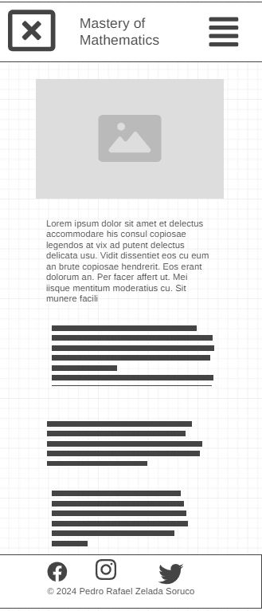
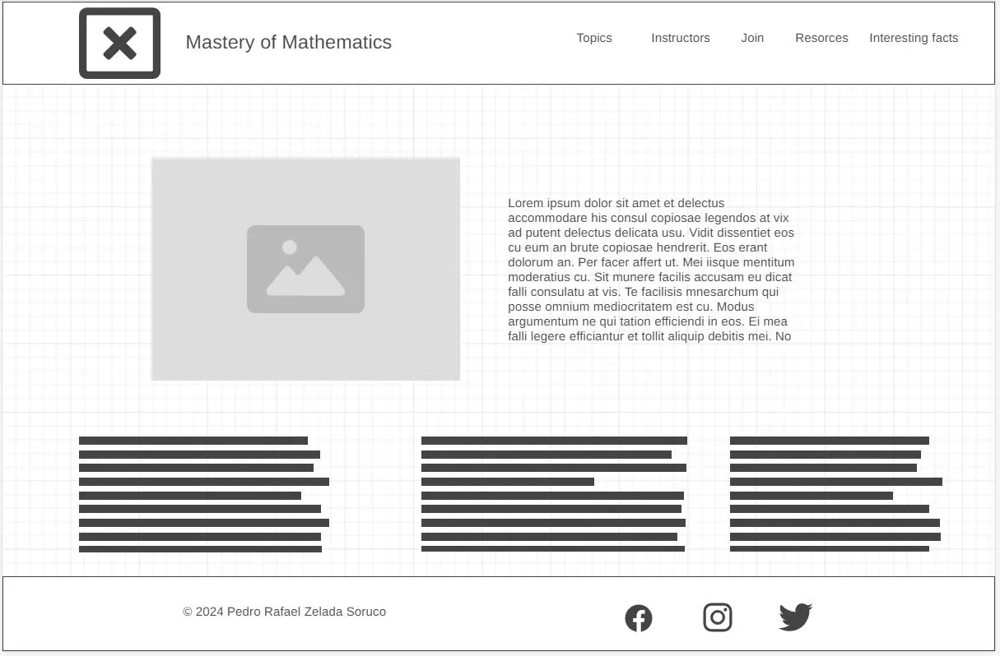

Site Name
Mastery of Mathematics
The name implies that through the website users will be able to learn and expand their knowledge of mathematics.
URL: mathmastery.com
Site Purpose
The site seeks to provide information and resources for mathematics students, the site will also provide information from mathematics tutors for students who require more help, there will also be information from mathematics books and other resources, interesting facts about mathematics will be provided.
Scenarios
Example: for mathematics students
- What are some recommended books for understanding calculus better?
- What topics will be covered in the advanced algebra class?
Color Schema
Primary Color: #2E86C1 - Used for headings.
Secondary Color: #F39C12 - Secondary.
Third Color: #f4f4f4 - Used for background.
Typography
Heading Font: Roboto, serif
Body Font: Open Sans, sans-serif
Wireframe
Mobile View:
Desktop View:
